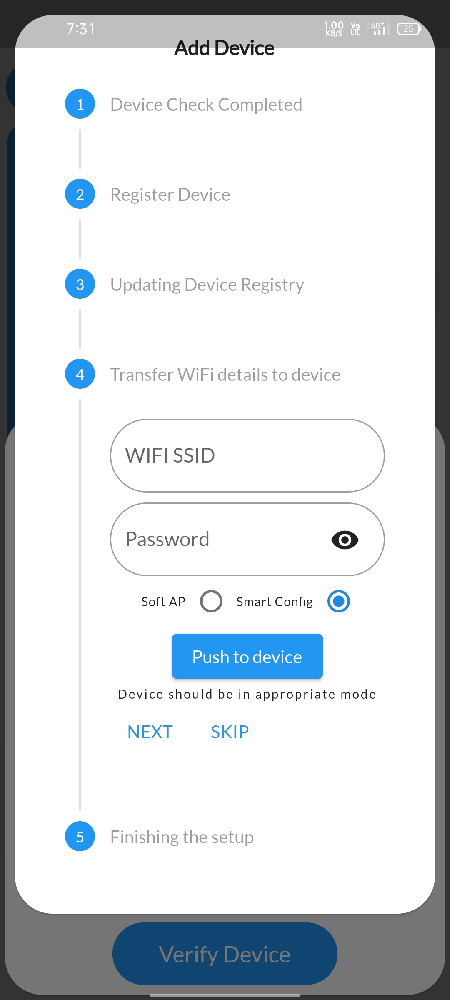
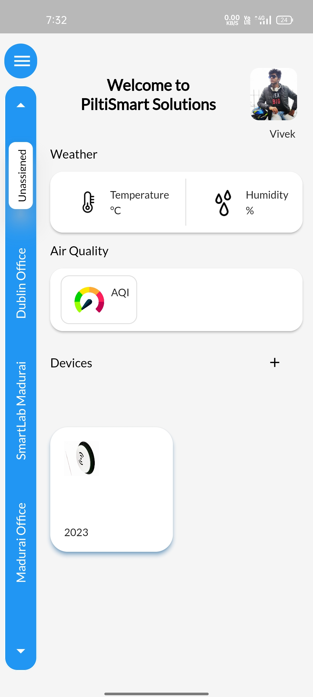
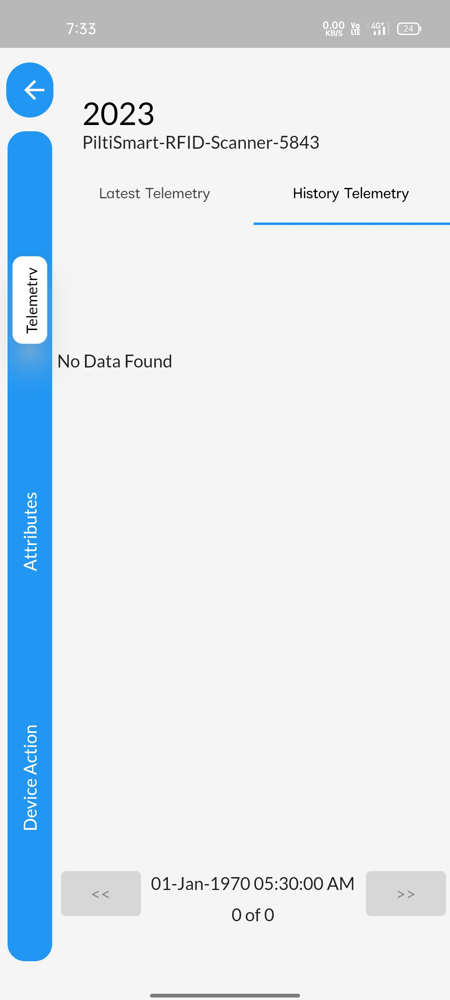
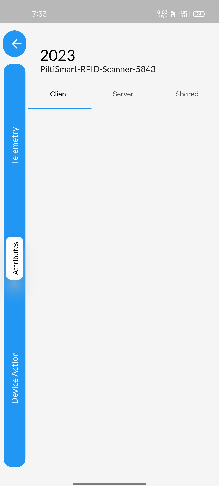

STEP 1The LOGIN Page will be displayed once you open the App, where you can proceed to LOGIN or create a new LOGIN by clicking register |
 |
STEP 2Enter your EmailID & Password then click LOGIN button. (If you are an existing user) |
 |
STEP 3Click the Plus Icon to Add New Device. |
 |
STEP 4You can add a device either by Scanning the QR Code or by manually entering the device MAC Id. |
 |
STEP 5Next Click the Verify device button. |
 |
STEP 6
If you have entered the wrong MAC Id or If you used an unregistered device it will display "DEVICE NOT FOUND" check the MAC Id, incase the MAC ID isn't wrong, contact the Pilti-Smart personnel ASAP |
 |
STEP 6a
On scanning the QR code or the entering the Serial number of a registered device, an add device tab will be pop-up showing the device profile if the device profile is then correct click the "next button" visible in the pop-up tab, incase of wrong device profile contact Pilti-Smart personnel |
 |
STEP 7Provide a name to your Registered Device of your Desire. |
 |
STEP 8Atlast a Confirmation message will be displayedinforming that Device creation is successful. |
 |
STEP 9Device Registry will be Updated automatically. |
 |
STEP 10You can send your WIFI detailes via two different options availableA brief guidance about those options are provided right below After following the essential procedure, Click the push to device tab available |
|  |
STEP 11Enter your WIFI-SSID (wifi name) and PASSWORD and Select smart-config option available below If the device is available in the smart-config mode or put the physical device in smart config mode (yellow light blinks rapidly) |
 |
STEP 12Enter your WIFI-SSID (wifi name) and PASSWORD and Select Soft-AP option available below If the device is available in the Soft-AP or put the physical device in Soft-AP mode (red light blinks rapidly) |
 |
STEP 13If WIFI isn't readily available, you can setup the device by clicking the skip buttonto avoid entering WIFI detailes |
 |
STEP 14You are redirected to finishing setup after carrying out the above procedureClick the completed button displayed to get started with your device |
 |
STEP 15Move to the home page, the instructions to check the newly added device is given below. |
 |
STEP 16Click the unassigned tab displayed in the side-panel. |
 |
STEP 17The newly added device will be displayed. |
|  |
STEP 18Similarly you can check the newly added device through dashboard as well, Click the menu button. |
 |
STEP 19Select device relationship tree. |
 |
STEP 20You can notice newly added device under unassigned section. |
 |
STEP 21Click on the newly created device. |
 |
STEP 22you can find several options in the side panel. namely "TELEMETRY", "ATTRIBUTES" AND "DEVICE ACTION" Latest Telemetry displays Real-time telemetry entries. |
 |
STEP 23History telemetry displays last recent telemetry entries. |
|  |
STEP 24You also have attributes option in the side panel, Attributes accounts details such as device MAC Id, device creatin date and other essential details such as server details, shared attributes. |
|  |
STEP 25Device actions allows you user to "restart the device remotely" and also " an option to remove the device from the dashboard if you wish to configure it for someother purpose" |
 |